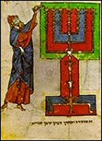

|
Là où finit la philosophie, commence la sagesse de la Kabbale. Rabbi Nahman de Braslav |
L'univers de la Kabbale
Les kabbalistes croient en l'existence d'un Dieu impersonnel, l'En-Soph (« ce qui est infini »), qui demeure éternellement inconnaissable dans les profondeurs de son propre être.

La connaissance de Dieu
La kabbale veut concilier l'En-Soph avec le Dieu personnel de la Bible. Cet effort se traduit par une gamme de tentatives dont est née la doctrine des sefirot, qui, bien que très différemment exprimée par les maîtres de la kabbale, constitue l'essentiel de leur enseignement. Selon les uns, les 10 Sefirot prises ensemble ne sont pas autre chose que Dieu, chacune d'elles présentant une face de l'infini ; selon les autres, ce ne sont que les instruments de la puissance divine ; Dieu est immanent en elles, mais il demeure au-delà de ce qui est perçu en elles. Les sefirot sont degrés de l'être, force divine, catégories au sens d'Aristote, nombres, sphères, vases qui reflètent en différentes couleurs la lumière divine, noms de Dieu, enfin degrés à travers lesquels Dieu descend de sa retraite jusqu'à sa révélation dans la Chekhina, l'étincelle créatrice. Il est difficile de les définir. Prenant leur source dans le monde supérieur et infini, mais conditions du « fini », elles exercent leur activité dans les trois mondes inférieurs : idées créatrices, forces créatrices, formes créatrices.

Les âmes humaines, primitivement unies en Adam, ont été séparées après la chute et unies au corps. Elles sont formées de trois éléments qui participent aux trois mondes. Après la mort, le premier élément retourne à la lumière de Dieu, le second connaît les béatitudes du paradis, le troisième repose en paix sur la terre. Il en est ainsi pour les âmes des justes ; celles des pécheurs doivent, à travers une transmigration dans d'autres corps humains, réaliser la perfection de leur existence terrestre.